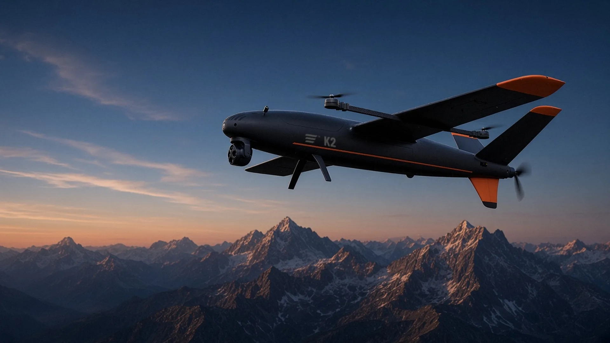
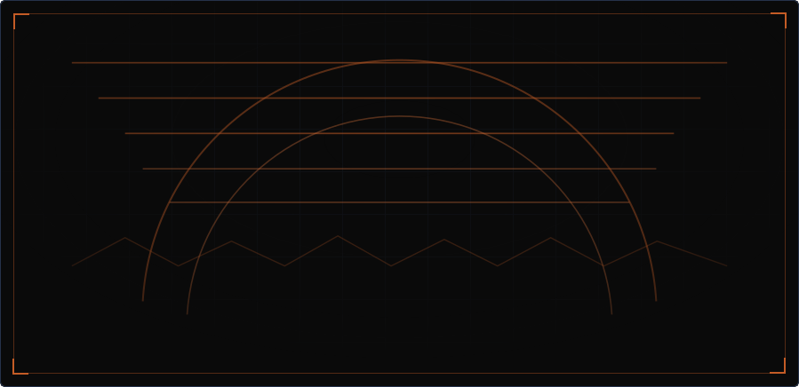
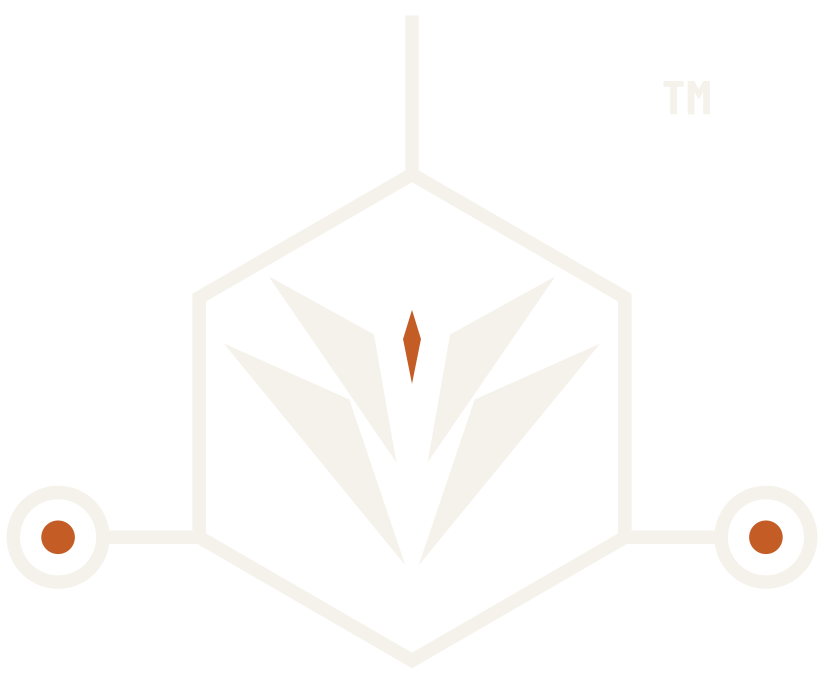
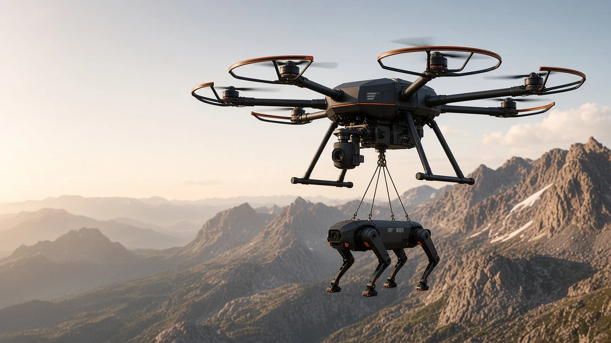
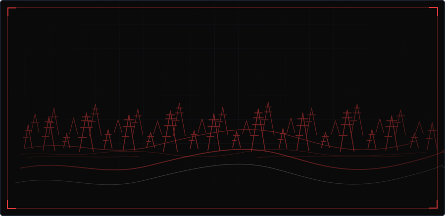
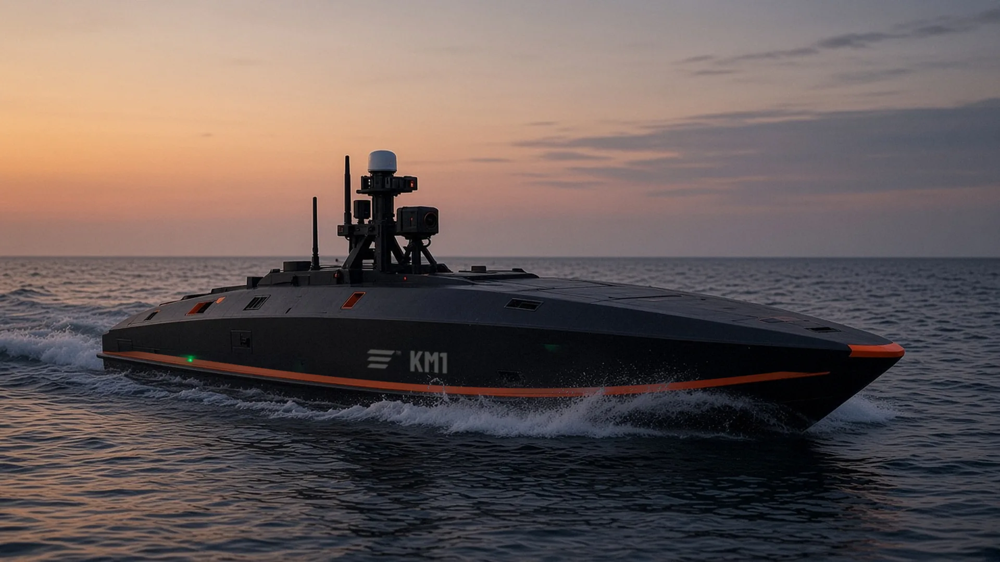
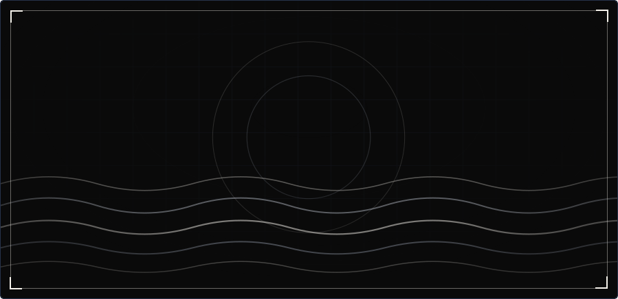

Kannon™ Air
Autonomous aerial assets designed to support search and rescue operations, providing an additional perspective on hazardous or difficult-to-access environments.
KANNON

When a rescue takes place in dangerous or unpredictable conditions, reaching the scene can be one of the largest issues. Difficult terrain, rising water and limited visibility can prevent responders from getting the information they need without putting themselves at risk.
Kannon™ is Black Water Industries' proprietary physical AI system, being developed to support emergency operations across air, ground and maritime environments. Working alongside our N.O.L.A.N.™ virtual AI, Kannon™ brings autonomous capabilities into a connected response, with mission teams retaining control.

The name Kannon comes from the Japanese figure of compassion, traditionally associated with hearing the cries of those in distress and responding to their suffering. One of her most recognizable representations is Senju Kannon, depicted with a thousand arms reaching toward those who need help.
For Black Water, the name reflects the purpose behind the technology we're developing. Emergency responders dedicate themselves to reaching people in danger, often at considerable personal risk. Kannon™ is being built with those people at the heart, extending the capabilities available to them when access is difficult and conditions are uncertain.
Different emergencies demand different approaches. A missing person search in remote woodland presents very different challenges from a maritime rescue or an incident involving damaged infrastructure.
Kannon™ is being developed around three physical AI asset categories, supported by Black Water's wider operational capabilities.


Autonomous aerial assets designed to support search and rescue operations, providing an additional perspective on hazardous or difficult-to-access environments.


Ground-based systems intended for operations across challenging terrain and environments where direct access may expose responders to unnecessary danger.


Autonomous maritime assets being developed for operations on and around water, including rescue situations where changing conditions complicate access.
Kannon™ operates within Black Water's wider approach to emergency response technology, with N.O.L.A.N.™ providing the virtual AI backbone that connects assets and mission information. The aim is to give incident commanders a coordinated view of their operations, helping them direct the appropriate resources as conditions develop.
Black Water is developing Kannon™ for public safety agencies and commercial operators looking for new capabilities for demanding environments.
To discuss the technology, its intended applications or future development, contact our team.